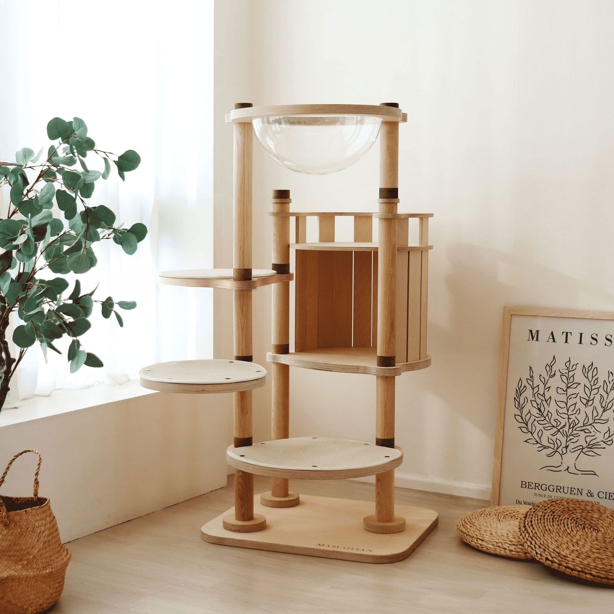

被需求找到
飼主還沒認識品牌時，會先查貓跳台怎麼選、實木材質與空間配置。把這些問題變成品牌自己的入口。
台灣市場品牌成長與 SEO 策略提案
從一個選購問題開始，讓還不認識 MASCOTIAN 的飼主，找到適合貓咪、也適合家的答案。
MASCOTIAN / 品牌起點
官網已有完整商品系列、視覺素材與購物入口；下一段成長，是把這些基礎接到飼主的搜尋問題。
飼主還沒認識品牌時，會先查貓跳台怎麼選、實木材質與空間配置。把這些問題變成品牌自己的入口。
延伸現有商品攝影與模組化特色，用可核對的規格、配置與使用情境，讓精品價值更容易被理解。
除了曝光與點擊，也共同追蹤商品瀏覽、配置諮詢、加入購物車與訂單，判斷內容是否接近生意。
本次提案的核心：
讓「正在選貓家具的人」，先在 MASCOTIAN 找到選擇的依據。
MASCOTIAN / 先理解服務
把飼主的問題回答完整，讓官網多一個長期接觸新客的方式。
「實木貓跳台」
「大型貓跳台怎麼選」
還不一定知道品牌名稱
看懂平台、層間動線、擺放空間與安裝條件。
我們研究需求與製作內容
從文章前往相關貓塔、貓柱或配置說明。
我們規劃清楚的承接連結
標準款走商品選購；需調整的家庭走配置諮詢。
雙方共同確認追蹤方式
SEO 是整理網站與內容，讓正在搜尋相關需求的人，更有機會在自然搜尋結果找到品牌，再走向商品理解與購買。
以上為本案建議路徑示意，並非已取得的排名或營收成果。曝光、點擊與成交是不同階段。
MASCOTIAN / 我們實際做什麼
合作重點是需求研究與文章內容，把品牌已有的產品優勢整理成飼主能讀懂、能採取下一步的答案。
盤點主推產品、搜尋意圖與既有文章，合併重複題目，確定值得優先回答的問題。
製作有段落、有比較依據、有商品連結的文章；品牌確認規格、安裝與客製事實。
依約定權限與範圍發布，檢查閱讀及商品入口，追蹤搜尋與商業行為。
| 品牌正在經營的管道 | 主要用途 | SEO 如何銜接 |
|---|---|---|
| 社群與展會 | 感受設計、認識品牌、互動體驗 | 讓會後搜尋或尚未接觸品牌的人，也能找到清楚答案 |
| 廣告 | 依投放條件主動觸及與測試 | 文章補充選購理解；成效與投放費用分開判讀 |
| 自然搜尋 | 在飼主主動提出問題時出現 | 以可累積的內容，連向適合商品與諮詢 |
本提案為建議執行方向；文章總量、發布權限及需調整頁面，在啟動前共同界定。
MASCOTIAN / 飼主與情境
以飼主正在解決的問題分類，比只用年齡或性別，更能決定文章要回答什麼。
大型貓家庭
先整理平台尺寸、結構、落地與安裝等比較項目，再對照山岳等系列的正式資料，確認個別適用條件。
情境為策略推導，並非已取得的客群占比；適用商品須依原廠規格、貓咪個體及安裝環境確認。
MASCOTIAN / 官網觀察
好的商品圖負責吸引；選購內容幫助陌生飼主理解「為什麼適合我家」。
抽查環繞階梯、山岳與全景吊橋商品頁：已有商品圖、顏色與購物入口，細節說明多以長圖片呈現。
實際商品攝影、系列名稱與既有電商選購流程。
把圖片中的選購資訊整理成可閱讀的中文段落：尺寸、適用條件、配置差異與常見疑問。
文章連至對應商品與配件；需要客製或安裝判斷的家庭，提供明確諮詢入口。
這是本次公開頁面觀察，並未據此判定網站無法收錄，也不預設必須重做網站。
MASCOTIAN / 搜尋市場
搜尋量用來了解需求規模，內容是否能幫助飼主完成選購，才是本案選題的另一個必要條件。
「貓跳台」「貓跳台推薦」「實木貓跳台」：飼主需要建立比較框架。
「大型貓跳台」「曼赤肯貓跳台」：飼主在找能對應自家貓咪的條件。
「頂天立地貓跳台」「客製化貓跳台」：飼主在確認空間、天花板與調整可能性。
市場數字應與查詢地區、期間和工具一起閱讀；搜尋量代表查詢需求，不代表品牌可取得的人數或訂單。
我們建議：優先處理與實際商品、配置諮詢直接相關的問題，再用市場數據校正先後順序。「貓跳台」平均月搜尋量 6,600，適合建立整體選購入口；「實木貓跳台」140、「大型貓跳台」50，量較小但需求更具體，適合用正式規格承接。
不同詞可能含近義搜尋，不把搜尋量相加推估市場人數。
MASCOTIAN / 互動探索
點選需求，查看「飼主想知道什麼、文章怎麼回答、如何接到商品」。
選購文章先說明材質、平台、安裝、維護與擴充，再接到分類、實際商品與配置諮詢。
此處為建議研究與選題方向。近義字若在回答同一問題，合併成一篇，避免為不同字面重複生產內容。
MASCOTIAN / 內容競爭
比較對象包含家具品牌、選物通路與選購文章。MASCOTIAN 值得投入的，是自己的產品理解與配置答案。
這篇公開文章將材質、不同商品與選購考量放在同一閱讀路徑。對本案的啟發：讓飼主先理解比較條件，再進入商品。
以實木材質與商品介紹承接選購問題；MASCOTIAN 可進一步呈現自己可核對的木材與配置資料。
分類頁搭配客製設計、材質介紹與作品相簿入口；本案可補客製前需準備的量測與需求。
型錄按系列與使用情境說明配置；本案可用實際貓塔、貓柱與配件，建立自己的情境導購。
2026-11-26 查閱各站公開內容；此頁只比較內容布局，未取得同業私有流量或轉換資料，不據此宣稱搜尋排名優劣。
MASCOTIAN / 購買決策
把問題回答到飼主能繼續行動，避免文章只有品牌介紹，最後仍得自己找商品。
| 飼主的閱讀階段 | 需要的答案 | 文章給出的下一步 |
|---|---|---|
| 我該選哪一種？ | 落地式與貓柱的差異、占地及安裝條件 | 進入對應系列，開始篩選 |
| 我家的貓能用嗎？ | 平台尺寸、層間動線、體型與習慣 | 看商品規格，提交個別需求 |
| 放在家裡合適嗎？ | 擺放照片、木色搭配、實際空間配置 | 量測家中空間，提出配置諮詢 |
| 之後能調整嗎？ | 可替換配件、擴充條件與照護方式 | 確認原廠相容性，再選配件 |
每篇文章都要讓人知道：
「我現在該看哪一款，或該先問什麼？」
MASCOTIAN / 品牌價值
商品特色若能回答具體疑問，才更容易成為飼主做選擇的理由。
把質感，轉成能比較、能確認的選購理由。
用同一系列實際組件示範配置變化，說明可調整之處與相容限制。
以原廠木材、接合與表面處理資料說明，不只重複「高品質」形容詞。
呈現貓咪體型、活動與空間量測；讓商品攝影同時幫助判斷占地與動線。
MASCOTIAN 官網實際攝影，延伸品牌既有工藝形象。
官方展商介紹支持品牌的韓國來源、模組化與美感定位。商品承重、安全、材質與適用限制，文章逐項依原廠確認資料撰寫。
MASCOTIAN / 內容優先順序
先投入品牌有能力回答、飼主也能接著採取行動的內容。
實木貓跳台怎麼選？落地式與頂天立地式如何依家中條件比較。
理由：先讓新客看懂差異，接到系列瀏覽。
大型貓需要哪些平台條件？短腿貓與幼貓如何規劃上下動線。
理由：把商品細節與家庭需求接起來。
貓家具如何融入客廳？客製配置前要量哪些地方、準備哪些資訊。
理由：把風格興趣轉成有內容的諮詢。
不把所有貓咪知識都當成優先題目。每個題目都先回答：能連向哪個商品或哪一種需求？品牌有什麼第一手資料能提供？
以上是方向及順序建議，不是已確認篇數或逐月排程。品種照護與健康議題不延伸成未經專業確認的商品療效。
MASCOTIAN / 文章架構示例
文章不是把關鍵字反覆放進段落，而是把一次選購需要的資訊組織起來。
建議文章架構 · 非已發布文章
先看貓咪體型與活動習慣，再確認平台、層間動線、占地與安裝條件；不只看外觀。
以品牌確認的尺寸、配置圖、材質及安裝說明呈現差異，清楚區分標準組合與需諮詢項目。
大型貓、多貓與短腿貓家庭分別需要確認什麼；相同商品也可能因配置而有不同適用條件。
已確定條件的讀者看相關商品；仍需確認天花板、空間或客製配置者，先提交量測與照片。

使用實際商品與原廠資料做說明，避免文章與販售內容脫節。
內容的工作：讓飼主讀完後少一個疑問，多一個選擇依據。
MASCOTIAN / 寵物實戰 / 貪貪
同樣面向寵物消費市場，貪貪讓我們能具體討論：選題、商品比較與自然搜尋如何接在一起。
台灣貓食與貓砂品牌 · 公開案例
GSC 網頁搜尋｜2025-07-05～2026-11-04｜2026-11-07 匯入
每月自然搜尋，單位：次。兩軸分別計算，不將線條高度當作相同數量比較。
| 月份 | 點擊（次） | 曝光（次） | 資料範圍 |
|---|
如何解讀
全站月點擊與曝光都有波動，不能把累積總量全算成單一批文章的成果。這個案例的可借鏡之處，是從商品比較與飼主疑問切入，再以實際文章表現核對。
全站包含既有內容、品牌字與其他行銷影響；不以總量推論訂單或營收。合作篇數為公開案例回饋，不是本案方案。
MASCOTIAN / 寵物實戰 / 貪貪文章
從實際公開原文看方法，再對照同一 URL 的頁面表現。
現行原文用粉塵、凝結、除臭及使用情境整理比較，而非只列品牌名稱。
摘要、選購要訣、各款評測與情境總結，讓讀者依問題找到對應資訊。
產品段落直接連至商品頁，讓有意願的人可以繼續了解。
把比較維度改成平台、動線、安裝與配件相容性，用真實產品資料承接。
此 URL 數據與「貓砂推薦」全站查詢數據不同。現行原文更新於 2026-11-17，晚於 GSC 統計截止日；本頁分析現行結構，不把現行內容視為歷史成效的唯一原因，也不表示每段皆由本團隊製作。
MASCOTIAN / 寵物實戰 / 鴻炎
鴻炎貓坊是以緬因貓為主的貓舍；這裡採用公開案例指定期間的 GSC 統計。
GSC 查詢資料｜2025-07-05～2026-11-04｜平均位置並非今日固定名次
每月自然搜尋，單位：次。兩軸分別計算，不將線條高度當作相同數量比較。
| 月份 | 點擊（次） | 曝光（次） | 資料範圍 |
|---|
先回答家長正在比較的問題，再以品牌資訊、實際服務與預約入口建立信任。
上方曲線為全站每月點擊與曝光，不是「緬因貓」單一查詢曲線。全站同期為 35,741 點擊、1,460,337 曝光。
鴻炎是品種貓舍，MASCOTIAN 是貓家具，商業模式不同；這個案例支持需求承接的方法，不代表本案可複製相同排名或轉換。
MASCOTIAN / 寵物實戰 / 鴻炎文章
內容把複雜問題整理成可理解的順序，再讓家長知道下一步找誰、看什麼。
實際原文：緬因貓價格好亂？教你幾招不當冤大頭
同樣是緬因貓，選擇與條件有什麼差別？
由等級、毛色及選購注意事項，帶到貓舍介紹與所在地。
原文有官方 LINE 詢問、小貓選購資訊與品牌入口，讓讀者繼續了解服務。
此 URL 的公開 GSC 頁面資料
2025-07-05～2026-11-04
高考慮程度的選購，需要先拆解影響選擇的因素，再給品牌提供的具體解法與詢問路徑。
頁面數據不是「緬因貓」單一查詢數據；未取得此文的逐頁查詢匯出或成交歸因。現行原文僅作內容結構分析，不推論歷史版本或唯一成效原因。
MASCOTIAN / 寵物實戰 / 其他案例
不只展示漂亮總數，也看需求是否貼近商品、服務與下一步。
2025-07-05～2026-11-04 全站 GSC 自然搜尋：36,023 點擊、1,461,983 曝光。明確品種需求可成為認識品牌的入口；本案仍需接回家具選購條件。
各案例網站基礎、服務與觀察期間不同，不以累積量直接比較好壞；客戶回饋與 GSC 測量分開呈現。
MASCOTIAN / 案例如何應用
從案例走回本案的商品、飼主與商業路徑，才有可執行的策略。
| 可借鏡的方法 | 本案實際應用 | 需要保留的差異 |
|---|---|---|
| 貪貪：商品比較 | 用實際規格與配置拆解貓塔／貓柱的選購條件，接到商品 | 家具選購周期與貓食、貓砂不同，不能複製流量或轉換率 |
| 鴻炎與詒瑋：明確需求 | 從大型貓、短腿貓等具體情境，回答平台與活動路徑 | 品種搜尋不等於家具需求，內容須有合理的選購承接 |
| 東洋：問題走向服務 | 將「家中放不下、配置不確定」接到需要資料齊全的諮詢 | 課程詢問與電商訂單不同，分別設計事件與衡量 |
| 家有萌寵：小量也如實看 | 用真實點擊、商品瀏覽與詢問累積觀察，保留早期規模 | 不以平均排名好看，就推論訂單已增加 |
轉用的是「把需求回答清楚」的方法，
本案成果，回到 MASCOTIAN 自己的資料判讀。
MASCOTIAN / 商品與諮詢
讓有意願的人可以繼續行動，也讓尚未確認條件的人有合適的詢問方式。
條件已明確
讀者已能確認擺放與規格，文章直接連到對應系列或商品，繼續看顏色、配置與選購資訊。
建議追蹤：商品連結點擊、商品瀏覽、加入購物車、開始結帳、完成訂單。
需要個別判斷
需要確認天花板、空間、貓咪體型或客製需求的家庭，先提供尺寸與照片，讓品牌更容易回覆。
建議追蹤：諮詢入口點擊、實際有效詢問及後續成交；入口點擊不等於成功加好友。
文章與商品分工：文章幫助選擇；商品頁提供正式規格與交易資訊；品牌回覆個別適用與供應條件。
MASCOTIAN / 搜尋入口的延伸
AI 搜尋是既有搜尋策略的延伸；合作主線仍是讓需求與品牌內容接得起來。
用清楚標題、中文說明、具體比較與實際商品連結，讓搜尋者進入適合的文章與頁面。
把答案、規格與適用限制寫清楚，提供可核對的品牌事實與第一手素材，增加被理解與引用的機會。
Google 官方說明：適用於一般搜尋的 SEO 基本做法，同樣適用於 AI 功能；不需要另外一套特殊 AI 檔案才能符合資格。
把「貓塔與貓柱如何選」「客製配置需哪些資訊」寫成可獨立理解的答案，再附品牌自己的圖片與事實。
以實際觀察與可取得資料記錄；單次出現只支持那次查詢，不推論穩定推薦。
AI 摘要會依查詢與環境變動，無法保證引用。資料來源選單提供 Google Search Central 官方說明。
MASCOTIAN / 執行與分工
把可交付的工作、品牌需提供的事實，以及如何追蹤成果分開說清楚。
確認主推產品、飼主情境、原有內容與可使用資料。
挑選需求、確定架構、撰稿並規劃相關商品入口。
品牌審核事實，依約定範圍與權限完成發布及檢查。
對照交付、上線時間、搜尋及商業行動，調整後續重點。
需求研究、選題與內容結構、文章製作、導購設計、約定範圍發布與追蹤解讀。
商品與原廠規格、安裝與客製限制、可使用照片、供應資訊、品牌審稿與詢問／訂單回饋。
先共同界定文章數量、排程與需調整頁面；不預設包含逐件商品建檔、大量商品改寫或全站改版。具體製作與審稿日期於啟動時對齊。
MASCOTIAN / 成效衡量
讓品牌內部能同時看懂「做了什麼」與「是否更接近生意」。
| 要回答的問題 | 觀察指標 | 怎麼讀 |
|---|---|---|
| 工作是否按約完成？ | 完成與上線文章、審稿及入口檢查 | 以確認範圍與排程核對，與 SEO 成效分開 |
| 陌生飼主能找到我們嗎？ | 非品牌曝光、點擊、查詢與對應頁面 | GSC 分開看品牌／非品牌與文章群集 |
| 流量有往商品走嗎？ | 自然搜尋商品瀏覽、文章導購點擊、諮詢入口 | GA4 與入口事件先確認可量測，再觀察行為 |
| 是否帶來有效商業行動？ | 有效詢問、加入購物車、結帳、訂單與營收 | 依追蹤與歸因設定核對；區分廣告、回訪與跨裝置影響 |
以多月趨勢判讀累積效果。同時考慮文章上線時間、搜尋季節、品牌活動與商品供應，不用單月起伏或固定天數作排名驗收。
本案目前未取得私有 GSC、GA4 與訂單歸因，啟動時先確認基準與量測條件。不保證排名、AI 引用、詢問或營收。
MASCOTIAN / 下一步
把品牌的好，
變成飼主找得到、看得懂，
也願意繼續了解的答案。
選擇最希望被新客理解、也有充足商品資料支持的貓塔、貓柱或配置方向。
從大型貓、短腿與幼貓、多貓或重視居家美感的情境，對齊優先順序。
整理原廠資料、照片、常見客服問題與可追蹤行為，排定製作、審稿與發布節奏。
MASCOTIAN × 瑪卡鎷網路行銷
本提案供品牌內部討論搜尋與內容方向，具體合作範圍於方向對齊後確認。